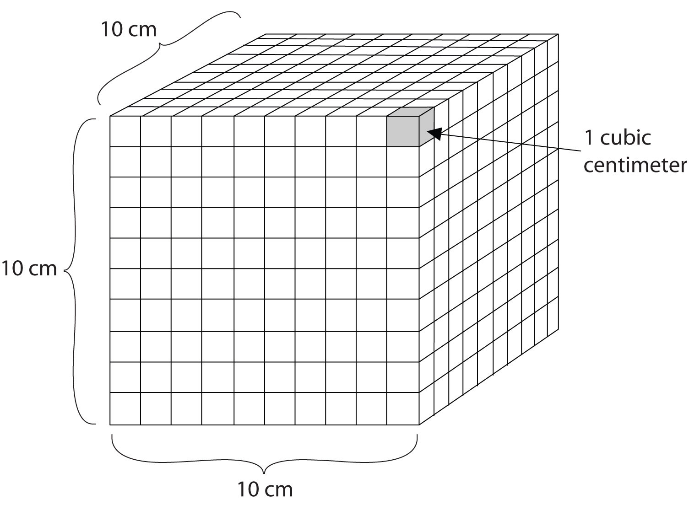

Now that we have discussed some of the conventions for expressing numbers, let us focus on the other component of a quantity—the units.
People who live in the United States measure weight in pounds, height in feet and inches, and a car’s speed in miles per hour. In contrast, chemistry and other branches of science use the International System of Units (also known as SI after Système Internationale d’Unités), which was established so that scientists around the world could communicate efficiently with each other. Many countries have also adopted SI units for everyday use as well. The United States is one of the few countries that has not.
Base (or basic) unitsA fundamental unit of SI., are the fundamental units of SI. There are seven base units, which are listed in Table 1.2 "The Seven Base SI Units". Chemistry uses five of the base units: the mole for amount, the kilogram for mass, the meter for length, the second for time, and the kelvin for temperature. The degree Celsius (°C) is also commonly used for temperature. The numerical relationship between kelvins and degrees Celsius is as follows:
K = °C + 273Table 1.2 The Seven Base SI Units
| Property | Unit | Abbreviation |
|---|---|---|
| length | meter | m |
| mass | kilogram | kg |
| time | second | s |
| amount | mole | mol |
| temperature | kelvin | K |
| electrical current | ampere | amp |
| luminous intensity | candela | cd |
The United States uses the English system of units for many quantities. Inches, feet, miles, gallons, pounds, and so forth, are all units connected with the English system of units.
The size of each base unit is defined by international convention. For example, the kilogram is defined as the quantity of mass of a special metal cylinder kept in a vault in France (Figure 1.8 "The Kilogram"). The other base units have similar definitions. The sizes of the base units are not always convenient for all measurements. For example, a meter is a rather large unit for describing the width of something as narrow as human hair. Instead of reporting the diameter of hair as 0.00012 m or even 1.2 × 10−4 m, SI also provides a series of prefixes that can be attached to the units, creating units that are larger or smaller by powers of 10.
Figure 1.8 The Kilogram

The standard for the kilogram is a platinum-iridium cylinder kept in a special vault in France.
Source: Photo reproduced by permission of the Bureau International des Poids et Mesures, who retain full internationally protected copyright.
Common prefixes and their multiplicative factors are listed in Table 1.3 "Prefixes Used with SI Units". (Perhaps you have already noticed that the base unit kilogram is a combination of a prefix, kilo- meaning 1,000 ×, and a unit of mass, the gram.) Some prefixes create a multiple of the original unit: 1 kilogram equals 1,000 grams, and 1 megameter equals 1,000,000 meters. Other prefixes create a fraction of the original unit. Thus, 1 centimeter equals 1/100 of a meter, 1 millimeter equals 1/1,000 of a meter, 1 microgram equals 1/1,000,000 of a gram, and so forth.
Table 1.3 Prefixes Used with SI Units
| Prefix | Abbreviation | Multiplicative Factor | Multiplicative Factor in Scientific Notation |
|---|---|---|---|
| giga- | G | 1,000,000,000 × | 109 × |
| mega- | M | 1,000,000 × | 106 × |
| kilo- | k | 1,000 × | 103 × |
| deca- | D | 10 × | 101 × |
| deci- | d | 1/10 × | 10−1 × |
| centi- | c | 1/100 × | 10−2 × |
| milli- | m | 1/1,000 × | 10−3 × |
| micro- | µ* | 1/1,000,000 × | 10−6 × |
| nano- | n | 1/1,000,000,000 × | 10−9 × |
| *The letter µ is the Greek lowercase letter for m and is called “mu,” which is pronounced “myoo.” | |||
Both SI units and prefixes have abbreviations, and the combination of a prefix abbreviation with a base unit abbreviation gives the abbreviation for the modified unit. For example, kg is the abbreviation for kilogram. We will be using these abbreviations throughout this book.
Derived unitsA combinations of the SI base units. are combinations of SI base units. Units can be multiplied and divided, just as numbers can be multiplied and divided. For example, the area of a square having a side of 2 cm is 2 cm × 2 cm, or 4 cm2 (read as “four centimeters squared” or “four square centimeters”). Notice that we have squared a length unit, the centimeter, to get a derived unit for area, the square centimeter.
Volume is an important quantity that uses a derived unit. VolumeThe amount of space that a given substance occupies. is the amount of space that a given substance occupies and is defined geometrically as length × width × height. Each distance can be expressed using the meter unit, so volume has the derived unit m × m × m, or m3 (read as “meters cubed” or “cubic meters”). A cubic meter is a rather large volume, so scientists typically express volumes in terms of 1/1,000 of a cubic meter. This unit has its own name—the liter (L). A liter is a little larger than 1 US quart in volume. (Table 1.4 "Approximate Equivalents to Some SI Units" gives approximate equivalents for some of the units used in chemistry.) As shown in Figure 1.9 "The Liter", a liter is also 1,000 cm3. By definition, there are 1,000 mL in 1 L, so 1 milliliter and 1 cubic centimeter represent the same volume.
1 mL = 1 cm3Figure 1.9 The Liter
A liter is defined as a cube 10 cm (1/10th of a meter) on a side. A milliliter, 1/1,000th of a liter, is equal to 1 cubic centimeter.
Table 1.4 Approximate Equivalents to Some SI Units
| 1 m ≈ 39.36 in. ≈ 3.28 ft ≈ 1.09 yd |
| 1 cm ≈ 0.39 in. |
| 1 km ≈ 0.62 mi |
| 1 kg ≈ 2.20 lb |
| 1 lb ≈ 454 g |
| 1 L ≈ 1.06 qt |
| 1 qt ≈ 0.946 L |
EnergyThe ability to perform work., another important quantity in chemistry, is the ability to perform work, such as moving a box of books from one side of a room to the other side. It has a derived unit of kg·m2/s2. (The dot between the kg and m units implies the units are multiplied together.) Because this combination is cumbersome, this collection of units is redefined as a jouleThe SI unit of energy. (J). An older unit of energy, the calorie (cal), is also widely used. There are 4.184 J in 1 cal. All chemical processes occur with a simultaneous change in energy. (For more information on energy changes, see Chapter 7 "Energy and Chemical Processes".)
The food in our diet provides the energy our bodies need to function properly. The energy contained in food could be expressed in joules or calories, which are the conventional units for energy, but the food industry prefers to use the kilocalorie and refers to it as the Calorie (with a capital C). The average daily energy requirement of an adult is about 2,000–2,500 Calories, which is 2,000,000–2,500,000 calories (with a lowercase c).
If we expend the same amount of energy that our food provides, our body weight remains stable. If we ingest more Calories from food than we expend, however, our bodies store the extra energy in high-energy-density compounds, such as fat, and we gain weight. On the other hand, if we expend more energy than we ingest, we lose weight. Other factors affect our weight as well—genetic, metabolic, behavioral, environmental, cultural factors—but dietary habits are among the most important.
In 2008 the US Centers for Disease Control and Prevention issued a report stating that 73% of Americans were either overweight or obese. More alarmingly, the report also noted that 19% of children aged 6–11 and 18% of adolescents aged 12–19 were overweight—numbers that had tripled over the preceding two decades. Two major reasons for this increase are excessive calorie consumption (especially in the form of high-fat foods) and reduced physical activity. Partly because of that report, many restaurants and food companies are working to reduce the amounts of fat in foods and provide consumers with more healthy food options.
DensityThe mass of an object divided by its volume. is defined as the mass of an object divided by its volume; it describes the amount of matter contained in a given amount of space.
Thus, the units of density are the units of mass divided by the units of volume: g/cm3 or g/mL (for solids and liquids), g/L (for gases), kg/m3, and so forth. For example, the density of water is about 1.00 g/cm3, while the density of mercury is 13.6 g/mL. (Remember that 1 mL equals 1 cm3.) Mercury is over 13 times as dense as water, meaning that it contains over 13 times the amount of matter in the same amount of space. The density of air at room temperature is about 1.3 g/L.
Give the abbreviation for each unit and define the abbreviation in terms of the base unit.
Solution
Give the abbreviation for each unit and define the abbreviation in terms of the base unit.
kilometer
milligram
nanosecond
centiliter
What is the density of a section of bone if a 25.3 cm3 sample has a mass of 27.8 g?
Solution
Because density is defined as the mass of an object divided by its volume, we can set up the following relationship:
Note that we have limited our final answer to three significant figures.
What is the density of oxygen gas if a 15.0 L sample has a mass of 21.7 g?
What is the difference between a base unit and a derived unit? Give two examples of each type of unit.
Do units follow the same mathematical rules as numbers do? Give an example to support your answer.
Base units are the seven fundamental units of SI; derived units are constructed by making combinations of the base units; base units: kilograms and meters (answers will vary); derived units: grams per milliliter and joules (answers will vary).
yes; (answers will vary)
List four base units.
List four derived units.
How many meters are in 1 km? How many centimeters are in 1 m?
How many grams are in 1 Mg? How many microliters are in 1 L?
Complete the following table:
| Unit | Abbreviation |
|---|---|
| centiliter | |
| ms | |
| cm | |
| kL | |
| micrometer |
Complete the following table:
| Unit | Abbreviation |
|---|---|
| microliter | |
| kilosecond | |
| dL | |
| ns | |
| millimeter |
What are some appropriate units for density?
A derived unit for velocity, which is the change of position with respect to time, is meters per second (m/s). Give three other derived units for velocity.
second, meter, kilogram, and kelvin (answers will vary)
1,000; 100
| Unit | Abbreviation |
|---|---|
| centiliter | cL |
| millisecond | ms |
| centimeter | cm |
| kiloliter | kL |
| micrometer | µm |
grams per liter, grams per milliliter, and kilograms per liter (answers will vary)